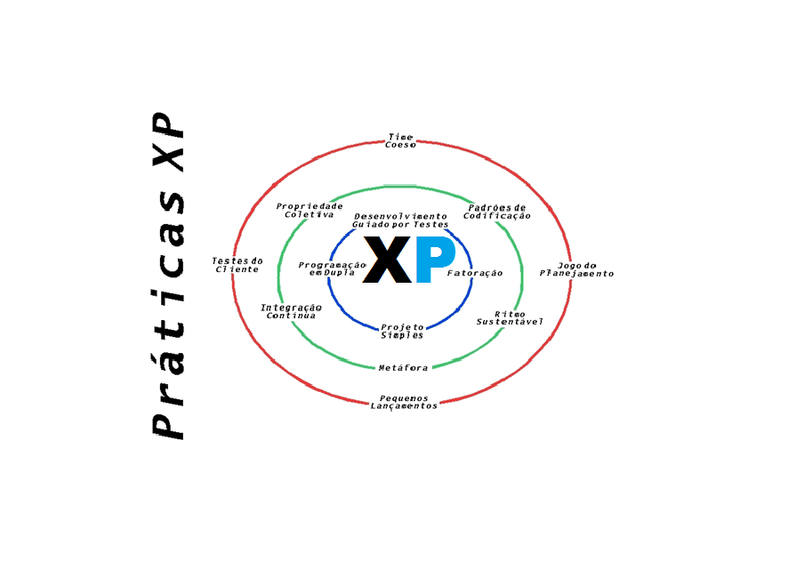

Scrum
Metodologia
Scrum na prática, funciona?
Na teoria, o Scrum é lindo e tudo parece ser as mil maravilhas, mas na pratica quando vamos aplicar não é bem isso que vemos, pois nem sempre conseguimos aplicar a ideia a risca e acabamos por fazer adaptações ou usar pequenas partes desse framework a nosso favor, não alterando muito a maneira como já trabalhávamos antes. Essa possibilidade de mudança é uma das suas grandes vantagens de uso pra empresa de desenvolvimento e para o cliente. Vivemos hoje uma transição do modelo de administração do negócio organizacional, as empresas estão começando a entender que precisam de um modelo novo de gestão, mais articulado e que não seja tão engessado, que não siga tantos processos burocráticos e principalmente que não seja um modelo do século passado, acredite você ou não, muitas empresas pararam no tempo e ainda seguem muitas ideias de administração baseadas no fordismo! Ainda temos o costume de projetar nossos projetos como se estivéssemos lançando foguetes a lua, definindo tempo para as atividades e criando cronogramas apertados, sendo maravilhosamente otimistas que tudo sairá de acordo com o caminho das flores, mas assim como errar os cálculos de um foguete a lua, uma projeção errada de tempo custa muito estresse e pressão ao time de desenvolvimento como um todo, o ambiente se torna maçante e o líder tem que quebrar a cabeça para “desafogar” o time. Uma das primícias do Scrum é usar projetos passados para conseguir ter uma ideia de quanto tempo um novo projeto vai levar para estar pronto, ou seja se você está implementando Scrum agora no seu time, não conseguira dizer a ninguém quanto tempo o time irá demorar para fazer um novo projeto. Uma afirmação dessas assusta qualquer gestor, e se dissermos que um projeto deve ser feito por vez, evitando assim a troca de assunto na cabeça dos desenvolvedores e o famoso “multi-task”, assustaremos mais ainda. Isso porque o Scrum tem certos “rituais” que devem ser seguidos e se são ignorados percebemos que utilizar a ideia se torna um tanto falha.
Etapas da Metodologia:
Product Backlog
Um Product Backlog é uma lista priorizada, contendo breves descrições de todas as funcionalidades desejadas para o produto. Em projetos ágeis não é necessário iniciar um projeto com um esforço inicial demorado, coletando e documentando todos os requisitos de uma vez. Normalmente, a equipe e o Product Owner (dono do produto) escrevem e priorizam os itens iniciais do Product Backlog, sendo esses itens suficientes para que a equipe inicie a primeira iteração. O Product Backlog irá crescer e mudar à medida em que se aprende mais sobre o produto e sobre o cliente.Sprint Backlog
O Sprint Backlog é uma lista de tarefas que o Scrum Team se compromete a fazer em um Sprint. Os itens do Sprint Backlog são extraídos do Product Backlog, pela equipe, com base nas prioridades definidas pelo Product Owner e a percepção da equipe sobre o tempo que será necessário para completar as várias funcionalidades.Product Owner
O Product Owner é a pessoa que define os itens que compõem o Product Backlog e os prioriza nas Sprint Planning Meetings.Scrum Master
O Scrum Master procura assegurar que a equipe respeite e siga os valores e as práticas do Scrum. Ele também protege a equipe assegurando que ela não se comprometa excessivamente com relação àquilo que é capaz de realizar durante um Sprint.Scrum Team
O Scrum Team é a equipe de desenvolvimento. Nela, não existe necessariamente uma divisão funcional através de papéis tradicionais, tais como programador, designer, analista de testes ou arquiteto. Todos no projeto trabalham juntos para completar o conjunto de trabalho com o qual se comprometeram conjuntamente para um Sprint.Fonte: https://desenvolvimentoagil.com.br
Fonte: https://eusoudev.com.br
Processos com Scrum e XP (Extreme Programming):
Seguindo os métodos ágeis do Scrum e Extreme Programming (XP), a nossa empresa GreenVale Soluções adaptou para desenvolver soluções para sistemas de forma dinâmica. Os processos são divididos em etapas (sprints) que serviram para definir as tarefas e definir o tempo determinado para cada uma, com durabilidade de 2 semanas, a equipe realiza 2 reuniões por semana. Neste período o processo é modelado, implementado, testado e por fim, aplicado. A aplicação ocorre a cada encontro realizado com o cliente e o mesmo define o que está aceitável ou não, informa possíveis mudanças e concede o aval para prosseguimento das etapas seguintes. A cada encontro, é avaliado atividades sem necessidades para possível descarte, prezando pela mínimo de custos e otimização do produto final.
Extreme Programming (XP) é uma metodologia ágil para equipes pequenas e médias que desenvolvem software baseado em requisitos vagos e que se modificam rapidamente [Kent, 2004].Valores do Extreme Programming para Nossa Equipe Seguir na Prática
As práticas do XP são fundamentadas em valores. Pretendemos seguir cada um dos valores do XP. Entre os valores temos: Comunicação: segundo Beck “Os problemas nos projetos invariavelmente recaem sobre alguém não falando com alguém sobre algo importante”. Assim, a comunicação enfatiza que devemos sempre estar se comunicando seja entre desenvolvedores ou com os clientes. XP é organizado em práticas que não podem ocorrer se não houver comunicação. De preferencia os clientes devem estar sempre presentes para criar Histórias de usuário e cliente on-site (CCC) ou ainda tirar dúvidas. Outra forma de comunicação no XP é a Programação em pares, onde os desenvolvedores programam num mesmo computador, nesse formato de programação ambos estão constantemente se comunicando e trocando ideias. O Jogo do planejamento (planning poker) também é outra forma de comunicação visto que a equipe de desenvolvimento está dando sua visão técnica, o cliente por sua vez está dando requisitos em pró do negocio e dando as prioridades. A comunicação ajuda na eliminação de documentos e favorece a comunicação face a face. Simplicidade: é tentar fazer o mais simples possível e caso seja necessário faremos algo mais complexo amanhã. Muitas vezes algo é feito de forma completa e posteriormente não é mais sequer usado ou necessário. Portanto, entre os princípios temos: Qual é a coisa mais simples que funciona? Aqui também temos a importância do coach que deve estar sempre verificando se a simplicidade esta sempre sendo seguida nos projetos. Fazendo um paralelo entre a simplicidade e a comunicação conclui-se que a simplicidade faz com que temos menos a comunicar e de uma forma mais completa e por sua vez a comunicação faz com que transmitimos mais clareza e confiança para alimentar a simplicidade. Feedback: é muito presente no SCRUM através das reuniões diárias, retrospectiva, reuniões de revisão do produto, etc. Feedback é o valor primordial dentro do desenvolvimento ágil. O XP foi o precursor a falar em feedback e afirma que ele possibilita que o software evolua. O XP, como algo mais técnico que o SCRUM, diz que devemos sempre “Perguntar ao software, e não a um documento", uma forma de alcançar isso é através dos testes automatizados que permitem feedback rápido. Os teste automatizados respondem de forma imediata se aquilo que foi introduzido ainda esta funcionando. O Feedback precisa ser cedo para sabermos se estamos fazendo a coisa correta, precisa ser concreto perguntando diretamente ao código e precisa ser constante através de iterações curtas, incrementos, e releases. Aqui garantimos constantemente junto ao cliente se estamos fazendo certo e o prazo esta seguindo bem o planejado. Coragem: muitas vezes não fazemos as coisas porque não temos coragem de fazer as mudanças. XP diz que devemos ter coragem de sempre colocar o cliente a par do que está acontecendo. Entre aquilo que o XP considera que devemos ter coragem de fazer destacam-se: Acreditar na capacidade de reagir a mudanças; Trocar de paradigma; Aprender com os erros; Dar e receber feedback sem medo das consequências; Acreditar no feedback concreto (não na “teoria”); Fazer o que precisa ser feito; Jogar fora código ruim; Jogar fora protótipos criados para testar ideias. Coach: é uma pessoa responsável por garantir a aderência a estes valores nas práticas. O Coach normalmente é uma pessoa experiente que também ajuda as equipes a implementarem o XP e monitorar se as coisas estão sendo bem seguidas. Por fim, XP preconiza que Codificação é a atividade central do projeto, que os Testes (que também são código) servem de especificação de requisitos, e a Comunicação oral entre desenvolvedores é fundamental. Isto não quer dizer que a equipe XP não constrói documentos e não faz modelagem, ela só não considera que um modelo é um documento. Modelos são feitos o tempo todo seja como quadro branco, sessões de design, etc, mas servem como um suporte para o concreto que realmente importa. Os valores devem sustentar as práticas que serão vistas no próximo artigo como já foi solicitado pelos nossos leitores. Por fim a próxima sessão falará um pouco sobre a adoção do XP nas organizações.
Veja o diagrama abaixo:
Fonte: http://www.mindmaster.com.br
Processo Individual da Equipe:
Gerente de Projeto
Gerência de Projetos aplica conhecimentos com a finalidade de atingir os requisitos dos mesmos, inicia, planeja, executa, controla e encerra. A gerência é um item fundamental dentro de um projeto de software, e deve estar presente durante todo o ciclo de vida do desenvolvimento de um sistema. A XP, como qualquer outra metodologia de desenvolvimento, precisa de gerenciamento. Por outro lado, prezando sempre a simplicidade e a comunicação, não pode ser gerenciada da mesma maneira que as metodologias tradicionais de desenvolvimento. A figura 1 mostra um projeto típico de XP, onde o centro é o planejamento de releases, feito durante o planning game, e o acompanhamento do release plan, testes de aceitação e velocidade de desenvolvimento, que geram as métricas de velocidade e qualidade do projeto. Na figura abaixo, mostra o XP, conde o planejamento das releases, feito durante o planning game, o acompanhamento do release plan, testes de aceitação e velocidade de desenvolvimento, onde fazem com que as métricas de velocidade sejam conquistadas e haja qualidade no projeto. Coach: É o responsável pelo gerenciamento da equipe. Ele deve sempre motivar a equipe a não perder o foco, a não abandonar as técnicas e deve auxiliar a equipe em tudo que for possível. Ele também é o responsável pela negociação com o cliente quanto ao escopo de cada iteração e pela coordenação do planning game. A XP é centrada nas user stories, nos testes de aceitação e no tracking das métricas da XP. O gerente de projetos age como facilitador no fluxo de comunicação do projeto, não controla a informação, mas assegura que as pessoas consigam se comunicar. Existe monitoramento no progresso da equipe e ajuda a perceber o que foi conquistado, motivam os membros da equipe.Programador(a)
O XP reúne um conjunto coerente de técnicas de engenharia, que agrega dinâmicas de grupo. No XP temos um conjunto de quatro valores: comunicação, simplicidade, feedback e coragem, que a partir desses valores são geradas treze práticas: jogo do planejamento, programação em pares, pequenas versões, propriedade coletiva, metáforas, integração contínua, projeto simples, semana de 40 horas, testes, cliente presente, refatoração, padronização de código e reunião diária. As práticas reforçam os valores. Por tópicos as ativiades no geral são: Versões Pequenas ou release((a cada 2-3 meses) sendo que funcionalidades prioritárias são desenvolvidas mais cedo); Jogo do Planejamento(Seu objetivo é determinar rapidamente o escopo da próxima Release); Teste: A prática de teste no XP é bastante técnica, e envolve a presença do cliente no desenvolvimento e na validação de testes. O cliente compartilha com o desenvolvedor sobre o funcionamento do sistema. Os testes também se tornam as especificações da programação, visto que o teste diz o que deve estar de acordo e o que não deve estar de acordo, é como uma especificação; Programação em pares:Trata-se de duas pessoas trabalhando com UMA máquina onde um codifica, e o outro critica ou dá sugestões. Os pares trocam de lugar periodicamente. Essa prática é excelente e favorece comunicação e aprendizado; Projeto Simples: Projetos flexíveis são considerados uma defesa contra mudanças imprevistas no software, porém, projetos flexíveis também têm custos, tempo para desenvolvimento e manutenção, além de um código mais complexo e que muitas vezes nunca será utilizado; Refatoração: A refatoração significa melhorar o código sem alterar sua funcionalidade. Antes de uma mudança sempre refatoramos o código para facilitar a realização de mudanças; Propriedade Coletiva: Todos podem modificar o código a qualquer momento; Integração Contínua:Todo código deve ser integrado diariamente e todos testes devem passar antes e depois da integração; Cliente presente:Clientes devem estar presentes para escrevem testes de aceitação, definirem prioridades e histórias para as futuras iterações; Semana de 40 horas: O XP preconiza que não se pode trabalhar horas extras por mais de uma semana, pois trabalho extra é sintoma de que algo está errado. Devemos manter um ritmo sustentável; Padrões de Codificação: Todos mexem em todos os códigos, todos refatoram e todos trabalham em pares; Metáfora: é uma linguagem comum que todos devem possuir. Por exemplo, ao invés de descrevermos como uma certa arquitetura funciona apenas comunicamos o seu nome e todos entendem o que um programador quis dizer;Reunião diária:é uma prática vinda do SCRUM em que todos fazem uma rápida reunião de pé para discutir o que foi feito no dia anterior, o que será feito no dia atual e se existe algum impedimento.Testador
Analista de testes ou arquiteto: Dá o feeback de erros e bags, ajudando a melhorar a solução. Todos no projeto trabalham juntos para completar o conjunto de trabalho com o qual se comprometeram conjuntamente para um Sprint.Portfólio e Documentação:
Site COINFO
Site da COINFO do IF-Sertão.
Ferramentas:
Redmine
Redmine é um aplicativo da web flexível de gerenciamento de projetos. Escrito usando a estrutura Ruby on Rails, é multi-plataforma e multi-banco de dados. Redmine é open source e lançado sob os termos da GNU General Public License v2 (GPL)..Redmine é um software livre, gerenciador de projetos baseados na web e ferramenta de gerenciamento de bugs. Ele contém calendário e gráficos de Gantt para ajudar na representação visual dos projetos e seus deadlines.
Last updated 16:33 mins jan
Fonte:www.redmine.com Fonte:wikipedia.com
Visual Code
O Visual Studio Code é um editor de código-fonte leve, mas poderoso, que é executado em sua área de trabalho e está disponível para Windows, macOS e Linux. Ele vem com suporte integrado para JavaScript, TypeScript e Node.js e tem um rico ecossistema de extensões para outras linguagens (como C ++, C #, Java, Python, PHP, Go) e tempos de execução (como .NET e Unity). É um editor de código-fonte desenvolvido pela Microsoft para Windows, Linux e macOS. Ele inclui suporte para depuração, controle Git incorporado, realce de sintaxe, complementação inteligente de código, snippets e refatoração de código
Last updated 16:33 mins jan
Fonte:www.visualstudiocode.com Fonte:wikipedia.comGit
É um sistema de controle de versão distribuído gratuitamente e de código aberto projetado para lidar com tudo, de projetos pequenos a muito grandes, com velocidade e eficiência. Git ou em inglês britânico é um sistema de controle de versões, usado principalmente no desenvolvimento de software, mas pode ser usado para registrar o histórico de edições de qualquer tipo de arquivo.Git é fácil de aprender e ocupa uma área pequena com desempenho extremamente rápido . Ele supera as ferramentas SCM como Subversion, CVS, Perforce e ClearCase com recursos como ramificação local barata , áreas de preparação convenientes e vários fluxos de trabalho .
Last updated 16:33 mins jan
git.com wikipedia.comLaravel
Laravel é um framework de aplicação web com sintaxe expressiva e elegante. Já lançada a base - liberando você para criar sem se preocupar com as pequenas coisas.
Last updated 3 mins ago
Fonte:www.laravel.com
Brackets
Traduzido do inglês-Brackets é um editor de código-fonte com foco principal no desenvolvimento web. Criado pela Adobe Systems, é um software gratuito e de código aberto licenciado sob a licença MIT e atualmente é mantido no GitHub pela Adobe e outros desenvolvedores de código aberto. Está escrito em JavaScript, HTML e CSS
Last updated 17:11 mins jan
fonte:brackets.com fonte:wikipedia.com
Bootstrap
Bootstrap é um framework web com código-fonte aberto para desenvolvimento de componentes de interface e front-end para sites e aplicações web usando HTML, CSS e JavaScript, baseado em modelos de design para a tipografia, melhorando a experiência do usuário em um site amigável e responsivo.Projete e personalize rapidamente sites mobile-first responsivos com Bootstrap, o kit de ferramentas de front-end open source mais popular do mundo, apresentando variáveis e mixins Sass, sistema de grade responsivo, extensos componentes pré-construídos e poderosos plug-ins JavaScript.
Last updated 16:33 mins jan
Fonte:bootstrap.com Fonte:wikipidea.com